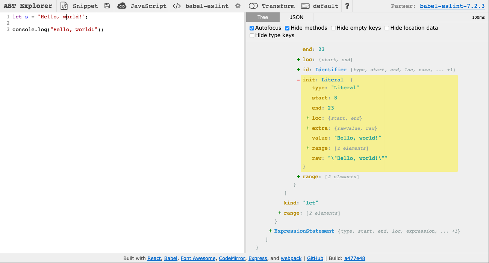
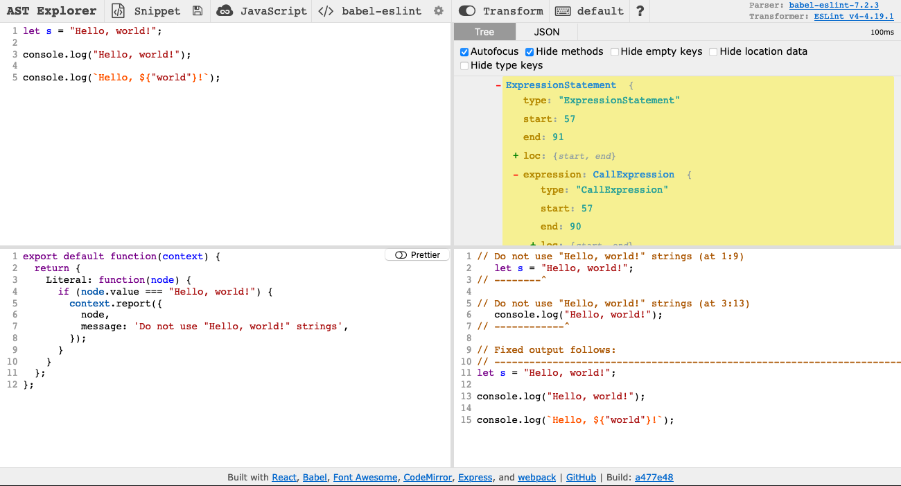

Custom ESLint checks
Table of contents
Introduction
We use ESLint to lint our JavaScript and TypeScript files. While ESLint comes with a ton of built-in rules that we can use, we sometimes need to write our own. This guide will cover how to write these custom ESLint rules and how to test them.
Limits of linters
Before we get too far into custom lint rules, let’s make sure we understand what linters like ESLint are actually capable of doing.
Consider two types things you might want to prohibit with a lint rule:
A property of the code’s text. For example, you might want to ensure that all lines are at most 80 characters long.
A property of the code’s behavior. For example, you might want to ensure that the code, when executed, does not print a particular string.
Linters operate on the code as text, so you can write a lint rule that bans a textual property with perfect accuracy. However, any lint rule that tries to prohibit a behavior must be imperfect. To see this intuitively, consider the problem we’ll approach below: writing a linter to prohibit programs that print Hello, world!. If our linter searched for the string Hello, world!, it would miss a program that printed 'Hello, ' + 'world!'.
If you are interested in computability theory, the technical description for this problem is that predicting a program’s behavior is an undecidable problem. Look up the halting problem if you want to learn more.
Whenever you are creating a new lint rule, consider whether you are trying to prohibit a textual or a behavioral property. If you want to prohibit a textual property, then your task is easy–just write a lint rule that perfectly blocks the property. On the other hand, if you want to prohibit a behavior, then you’ll need to first decide on textual properties that you can prohibit to approximately prohibit the behavior. For example, if you want to stop programs from printing Hello, world!, it’s approximately equivalent to prohibit literal Hello, world! strings. Then, write your lint rule to perfectly prohibit those textual properties. Note that since your textual properties will be an imperfect translation of the behavioral properties you want to prohibit, your lint rule will miss some code that performs the banned behavior, will flag some code that doesn’t actually perform the banned behavior, or both. That’s expected given the limits of linters.
Write rules
ESLint parses the code being linted into an abstract syntax tree (AST), and our custom rules operate on this AST. To define our rule, we provide functions to be called on various kinds of nodes in the AST. These functions can then report lint errors.
To understand how ASTs and linters work, we recommend that you use AST Explorer to view the AST for your code. You should select “JavaScript” as the language and “babel-eslint” as the parser. Unless you want to write your linter code in AST Explorer, disable the “Transform” option. Your AST Explorer window should look like this:

To write your lint rule in AST Explorer, select “ESLint v4” under the “Transform” option:

Hello world
To get a better idea for how lint checks work, let’s try writing a simple ESLint rule that forbids the string Hello, world!. (Maybe you don’t want people accidentally opening PRs that include code that prints Hello, world! from when they were learning JavaScript.) First consider what kinds of code should violate the rule. Here are some examples:
const s = "Hello, world!";
console.log("Hello, world!");
Examine the AST
To develop an intuition for how ASTs work, copy the examples of code we want our linter to catch into AST Explorer. The AST should look like this:

If you click on the two Hello, world! strings, the associated parts of the AST will be highlighted. Notice that both are described by a node like this:
{
"type": "Literal",
"start": 8,
"end": 23,
"loc": {
"start": {
"line": 1,
"column": 8
},
"end": {
"line": 1,
"column": 23
}
},
"extra": {
"rawValue": "Hello, world!",
"raw": "\"Hello, world!\""
},
"value": "Hello, world!",
"range": [
8,
23
],
"_babelType": "StringLiteral",
"raw": "\"Hello, world!\""
}
Note that the numbers you see may be different since they specify the location of the node in the file.
Design the rule
Suppose you decide to write a rule that raises an error whenever it finds a node that:
is of type “Literal”
has value “Hello, world!”
After designing any rule, it’s important to consider what benign code it will raise errors on (false positives) and what bad code it will miss (false negatives). For our rule:
False positives
Code that includes the string
Hello, world!but doesn’t print it will still raise errors. There probably aren’t any good reasons to do this though.
False negatives
Code that constructs the string
Hello, world!instead of including it as a literal will pass the lint check. This is an acceptable imperfection though since developers are almost always going to use the string literal when writing a hello world program.
Write the rule
To write the rule, enable “Transform” on AST Explorer.
ESLint rules are defined as functions that return objects. The returned objects have keys for different types of nodes, and each key maps to a function that checks whether a node of that type violates the rule. In our case, we want to check whether nodes of type Literal have a value attribute equal to Hello, world!, so we can write this rule in AST Explorer’s bottom-left panel:
export default function(context) {
return {
Literal: function(node) {
if (node.value === "Hello, world!") {
context.report({
node,
message: 'Do not use "Hello, world!" strings',
});
}
}
};
};
Notice that the node we are examining gets passed into our function and that we report errors by calling context.report. In the lower right on AST Explorer, you can see that this lint rule works as expected:

Add the rule to Oppia
To add the rule to Oppia’s suite of lint checks, we need to add some more metadata describing each problem the rule can find. For our hello world rule, we would create a JavaScript file in scripts/linters/custom_eslint_checks/rules/hello-world.js with the following code:
'use strict';
module.exports = {
meta: {
type: 'problem',
docs: {
description: '"Hello, world!" strings should not be used',
category: 'Best Practices',
recommended: true,
},
fixable: null,
schema: [],
messages: {
helloWorld: 'Do not use "Hello, world!" strings',
},
},
create: function(context) {
return {
Literal: function(node) {
if (node.value === "Hello, world!") {
context.report({
node: node,
messageId: 'helloWorld',
});
}
}
};
}
};
First, consider the meta key at the top of the exported object. The associated object contains the rule’s metadata. Under docs we describe the rule, and under messages we list the error messages that this rule can raise. ESLint supports rules that suggest fixes, but since we can’t automatically fix a Hello, world! usage, we set fixable to null. When writing your rule you should include all of these keys, but replace the values as needed to describe your rule.
Next, consider the create key, which is required for ESLint rules. This key maps to the function we wrote in AST Explorer. However, notice that the values passed to context.report() have changed. Instead of specifying the error message directly like before, we now provide a messageId key that matches one of the keys under meta.messages. Now when we call context.report, the user will be shown the helloWorld message from meta.messages. You should use the message ID structure when writing your rules.
We also need to add our rule to .eslintrc. Add "oppia/hello-world": "error", under the top-level rules key.
Run the linter with the new rule
To run the linter with your new rule, follow these steps:
Delete the
node_modules/eslint-plugin-oppia/directory so that in the next steps, the lint rules get re-installed.Run
yarn installfrom theoppia/directory to install the custom rules, including the one you just wrote.Execute the pre-commit linter, which will use your new rule. To speed up the lint checks, we recommend running the rule on just a single file when testing it. If you created a
test.jsfile with some code to try linting, you would run the linter like this:$ python -m scripts.linters.pre_commit_linter --path test.js ... ---------------------------------------- Please fix the errors below: ---------------------------------------- ... /oppia/test.js 2:11 Do not use "Hello, world!" strings oppia/hello-world ✖ 1 problem (1 error, 0 warnings) --------------------------- Checks Not Passed. ---------------------------
Note that you might see other lint errors too related to your
test.js. Those are fine to ignore since you won’t actually be committing thetest.jsfile.
Write tests
Along with every new rule you write, you should include a *spec.js file with tests for that rule. ESLint provides a handy RuleTester utility to make testing easier.
The tests for our hello world rule might look like this:
'use strict';
var rule = require('./hello-world');
var RuleTester = require('eslint').RuleTester;
var ruleTester = new RuleTester();
ruleTester.run('hello-world', rule, {
valid: [
{
code: 'var s = 0;'
},
{
code: 'var s = "Hello, " + "world!"'
},
],
invalid: [
{
code: 'var s = "Hello, world!"',
errors: [{
message: 'Do not use "Hello, world!" strings'
}],
},
{
code: 'console.log("Hello, world!")',
errors: [{
message: 'Do not use "Hello, world!" strings'
}],
},
]
});
Pay attention to the parts after valid and invalid. valid maps to a list of objects. Each object has one key, code, whose value is a string containing the code to lint. The linter will be expected to raise no errors on this code.
invalid maps to another list of objects that have code and errors properties. code maps to a string to lint, and errors maps to a list of objects, where each object describes an error that should be raised when linting the code. You will probably only need to specify the message of the error, but you can find more options in the documentation.
As you write your tests, think back to when you designed your rule. You should write cases for:
True positives: Bad code that you expect to result in lint errors.
True negatives: Good code that you don’t expect to result in lint errors.
False positives: Good code that you expect to result in lint errors because you can’t write a perfect linter.
False negatives: Bad code that you don’t expect to result in lint errors because the linter is imperfect.
Once you have written your tests, you can run them like this:
python -m scripts.run_custom_eslint_tests
Beyond hello world
ESLint has many more features described in the ESLint documentation. In particular, you may find the following features useful:
Placeholders
Your error messages can have placeholders that are filled by the data you pass to context.report(). For example, you might have an error message like this:
literals: 'Please do not use "{{stringValue}}" literals.'
Then you could call context.report() like this:
context.report({
node: node,
messageId: 'literals',
data: {
stringValue: node.value,
},
})
The value of node.value will be substituted in place of {{stringValue}}.